#> Warning: This tutorial was written with Giotto version 0.3.6.9038, your version
#> is 0.3.6.9046.This is a more recent version and results should be reproduciblelibrary(Giotto) # 1. set working directory results_folder = '/path/to/directory/' # 2. set giotto python path # set python path to your preferred python version path # set python path to NULL if you want to automatically install (only the 1st time) and use the giotto miniconda environment python_path = NULL if(is.null(python_path)) { installGiottoEnvironment() }
Dataset explanation
The CyCIF data to run this tutorial can be found here. Alternatively you can use the getSpatialDataset to automatically download this dataset like we do in this example.
We will re-analyze the PDAC data generated by tissue-CyCIF as explained in the paper by Lin et al.

Dataset download
# download data to working directory #### # if wget is installed, set method = 'wget' getSpatialDataset(dataset = 'cycif_PDAC', directory = results_folder, method = 'wget')
Part 1: Giotto global instructions and preparations
# 1. (optional) set Giotto instructions instrs = createGiottoInstructions(save_plot = TRUE, show_plot = FALSE, save_dir = results_folder) # 2. create giotto object from provided paths #### expr_path = paste0(results_folder, "cyCIF_PDAC_expression.txt.gz") loc_path = paste0(results_folder, "cyCIF_PDAC_coord.txt") meta_path = paste0(results_folder, "cyCIF_PDAC_annot.txt") png_path = paste0(results_folder, "canvas.png")
part 2: Create Giotto object & process data
# read in data information # expression info pdac_expression = readExprMatrix(expr_path, transpose = T) # cell coordinate info pdac_locations = data.table::fread(loc_path) # metadata pdac_metadata = data.table::fread(meta_path) pdac_test <- createGiottoObject(raw_exprs = pdac_expression, spatial_locs = pdac_locations, instructions = instrs, cell_metadata = pdac_metadata) ## normalize & adjust pdac_test <- normalizeGiotto(gobject = pdac_test, scalefactor = 10000, verbose = T) pdac_test <- addStatistics(gobject = pdac_test) ## visualize original annotations ## spatPlot(gobject = pdac_test, point_size = 0.5, coord_fix_ratio = 1, cell_color = 'frame', background_color = 'black', legend_symbol_size = 3, save_param = list(save_name = '2_a_spatPlot'))
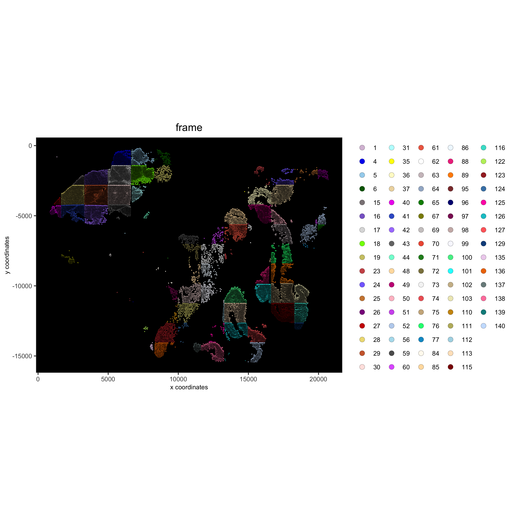
spatPlot(gobject = pdac_test, point_size = 0.3, coord_fix_ratio = 1, cell_color = 'COL', background_color = 'black', legend_symbol_size = 3, save_param = list(save_name = '2_b_spatPlot_column'))
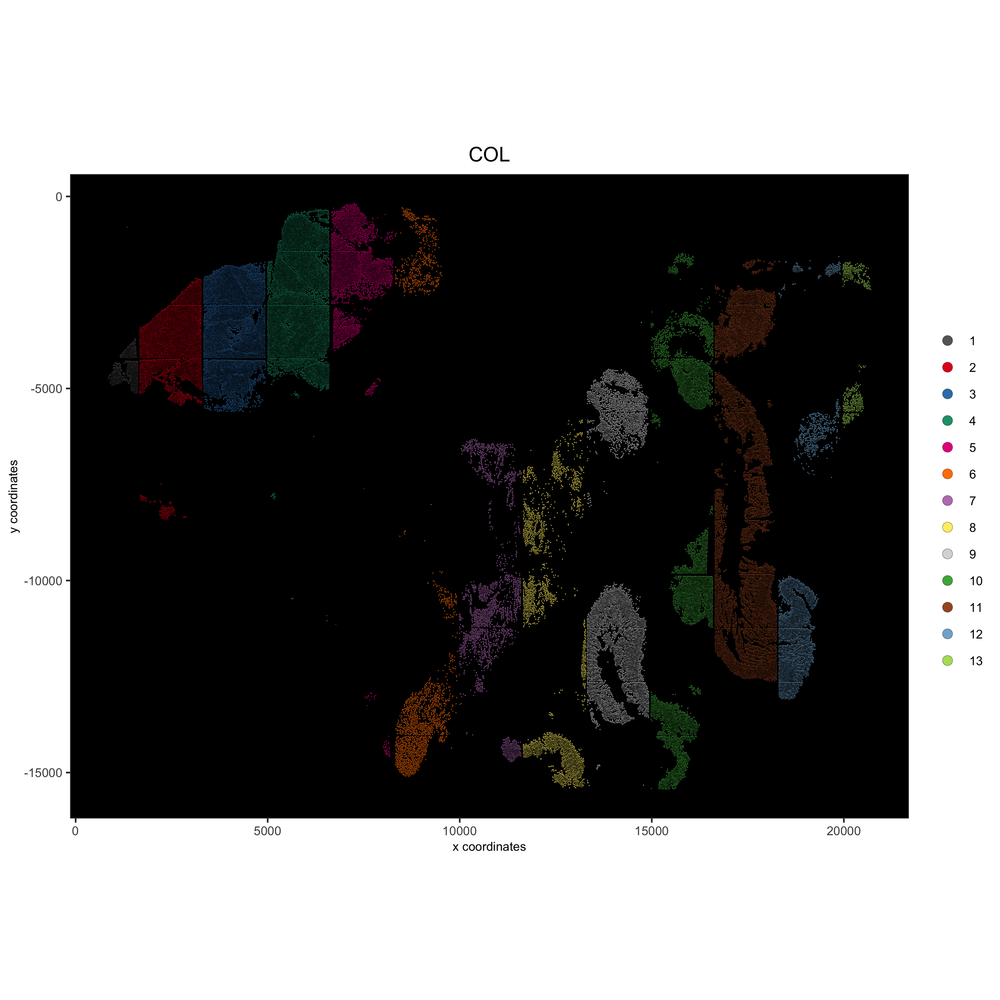
spatPlot(gobject = pdac_test, point_size = 0.3, coord_fix_ratio = 1, cell_color = 'ROW', background_color = 'black', legend_symbol_size = 3, save_param = list(save_name = '2_c_spatPlot_row'))
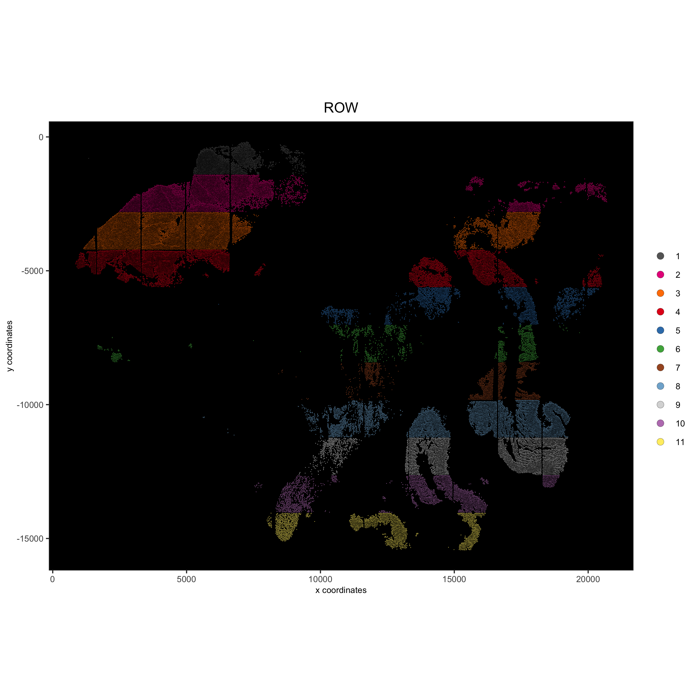
## add external histology information pdac_metadata = pDataDT(pdac_test) pancreas_frames = c(1:6, 27:31, 15:19, 40:44) PDAC_frames = c(23:26, 35:37, 51:52, 64:65, 77) small_intestines_frames = c(49:50, 63, 75:76, 88:89, 100:103, 112:116, 125:129, 137:140) # detailed histology hist_info = ifelse(pdac_metadata$frame %in% pancreas_frames, 'pancr', ifelse(pdac_metadata$frame %in% PDAC_frames, 'PDAC', ifelse(pdac_metadata$frame %in% small_intestines_frames, 'small_intest', 'other'))) pdac_test = addCellMetadata(pdac_test, new_metadata = hist_info) spatPlot(gobject = pdac_test, point_size = 0.3, coord_fix_ratio = 1, cell_color = 'hist_info', background_color = 'black', legend_symbol_size = 3, save_param = list(save_name = '2_d_spatPlot_hist'))
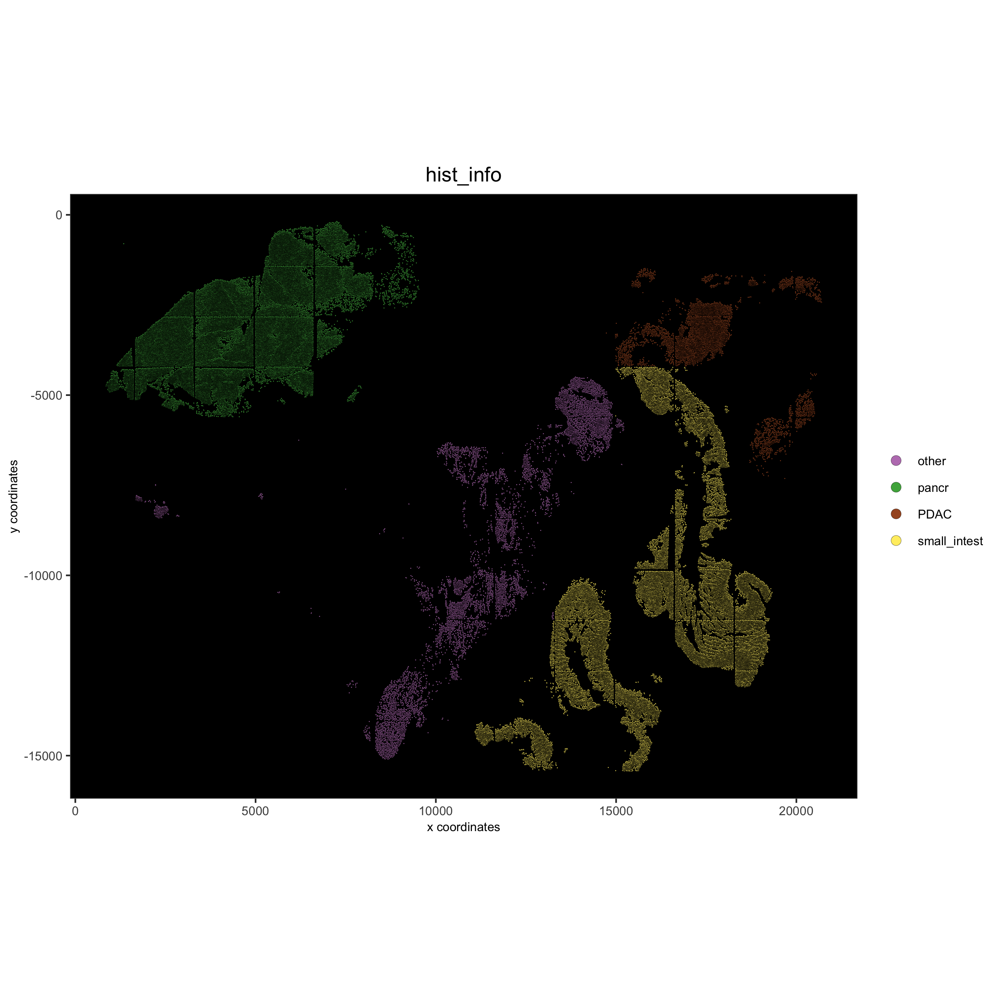
# coarse histology hist_info2 = ifelse(pdac_metadata$frame %in% pancreas_frames, 'pancr', ifelse(pdac_metadata$frame %in% small_intestines_frames, 'small_intest','PDAC')) pdac_test = addCellMetadata(pdac_test, new_metadata = hist_info2) spatPlot(gobject = pdac_test, point_size = 0.3, coord_fix_ratio = 1, cell_color = 'hist_info2', background_color = 'black', legend_symbol_size = 3, point_border_stroke = 0.001, save_param = list(save_name = '2_e_spatPlot_hist2'))
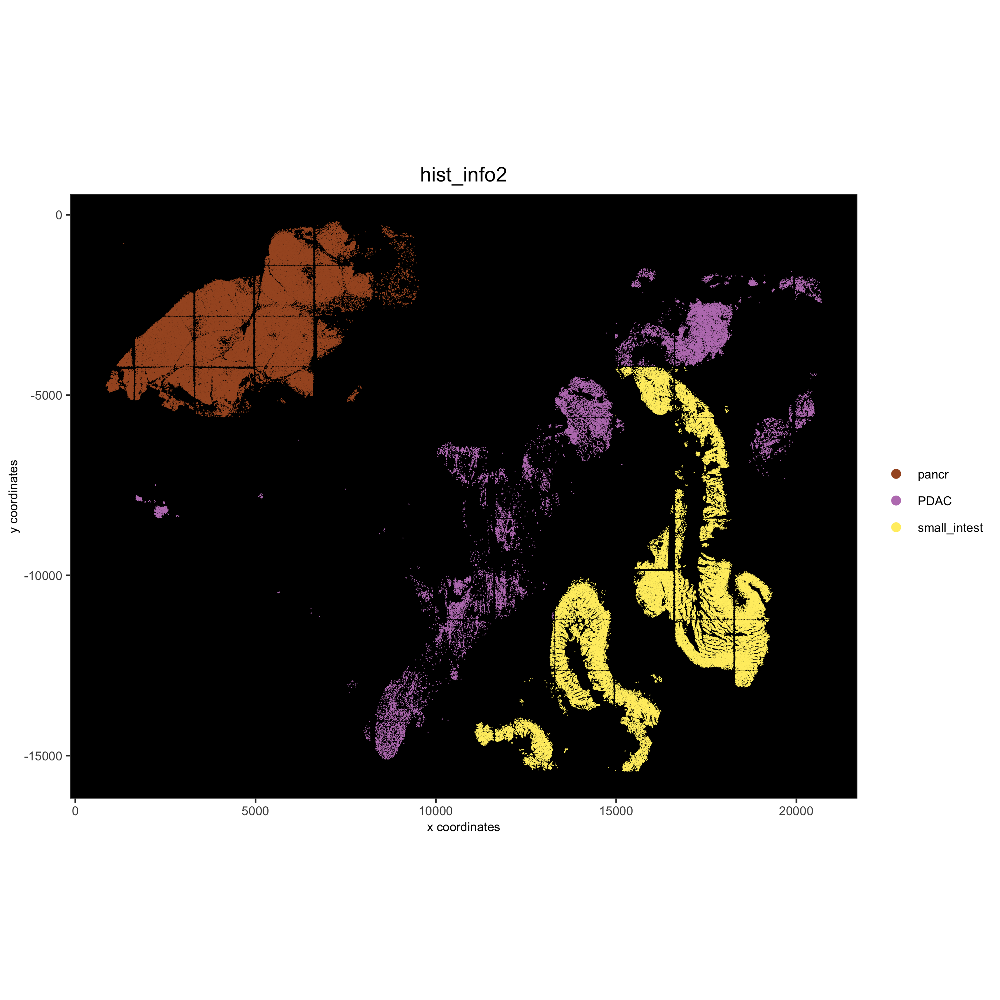
add and align image:
- read image with magick
- modify image optional (e.g. flip axis, negate, change background, …)
- test if image is aligned
# read mg_img = magick::image_read(png_path) # flip/flop (convert x and y axes) mg_img = magick::image_flip(mg_img) mg_img = magick::image_flop(mg_img) # negate image mg_img2 = magick::image_negate(mg_img) ## align image ## # 1. create spatplot mypl = spatPlot(gobject = pdac_test, point_size = 0.3, coord_fix_ratio = NULL, cell_color = 'hist_info2', legend_symbol_size = 3, point_border_stroke = 0.001, save_plot = F, return_plot = T) # 2.create giotto image and make adjustments (xmax_adj, xmin_adj, ...) hist_png = createGiottoImage(gobject = pdac_test, mg_object = mg_img2, name = 'image_hist', xmax_adj = 5000, xmin_adj = 2500, ymax_adj = 1500, ymin_adj = 1500) # 3. add giotto image to spatplot to check alignment mypl_image = addGiottoImageToSpatPlot(mypl, hist_png) mypl_image
- add giotto image(s) to giotto object to call them within spat functions
## add images to Giotto object ## image_list = list(hist_png) pdac_test = addGiottoImage(gobject = pdac_test, images = image_list) showGiottoImageNames(pdac_test)
part 3: dimension reduction
# PCA pdac_test <- runPCA(gobject = pdac_test, expression_values = 'normalized', scale_unit = T, center = F, method = 'factominer') signPCA(pdac_test, scale_unit = T, scree_ylim = c(0, 3), save_param = list(save_name = '3_a_signPCA'))
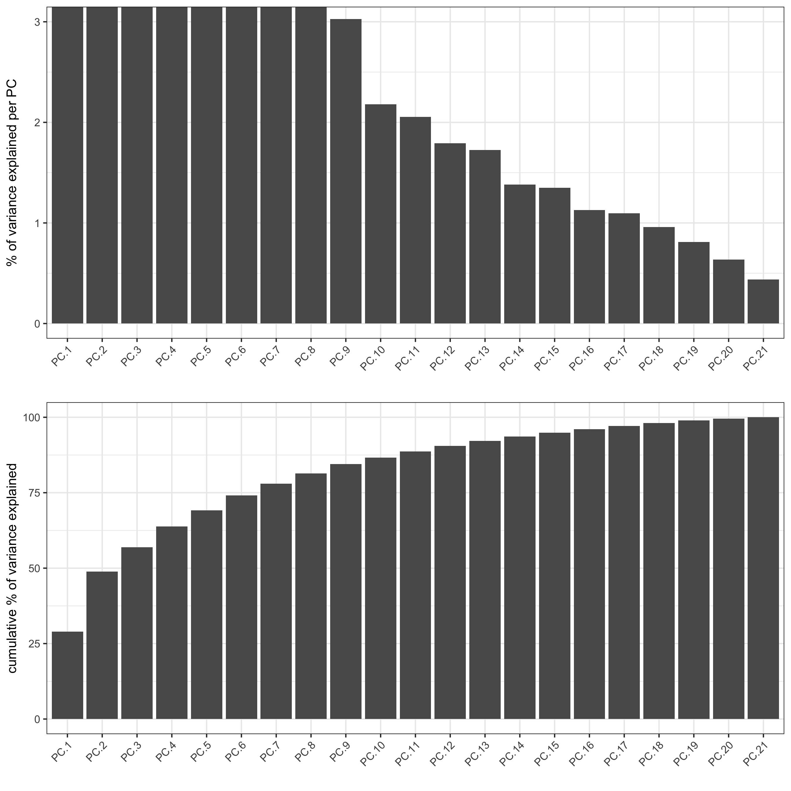
plotPCA(gobject = pdac_test, point_shape = 'no_border', point_size = 0.2, save_param = list(save_name = '3_b_PCAplot'))
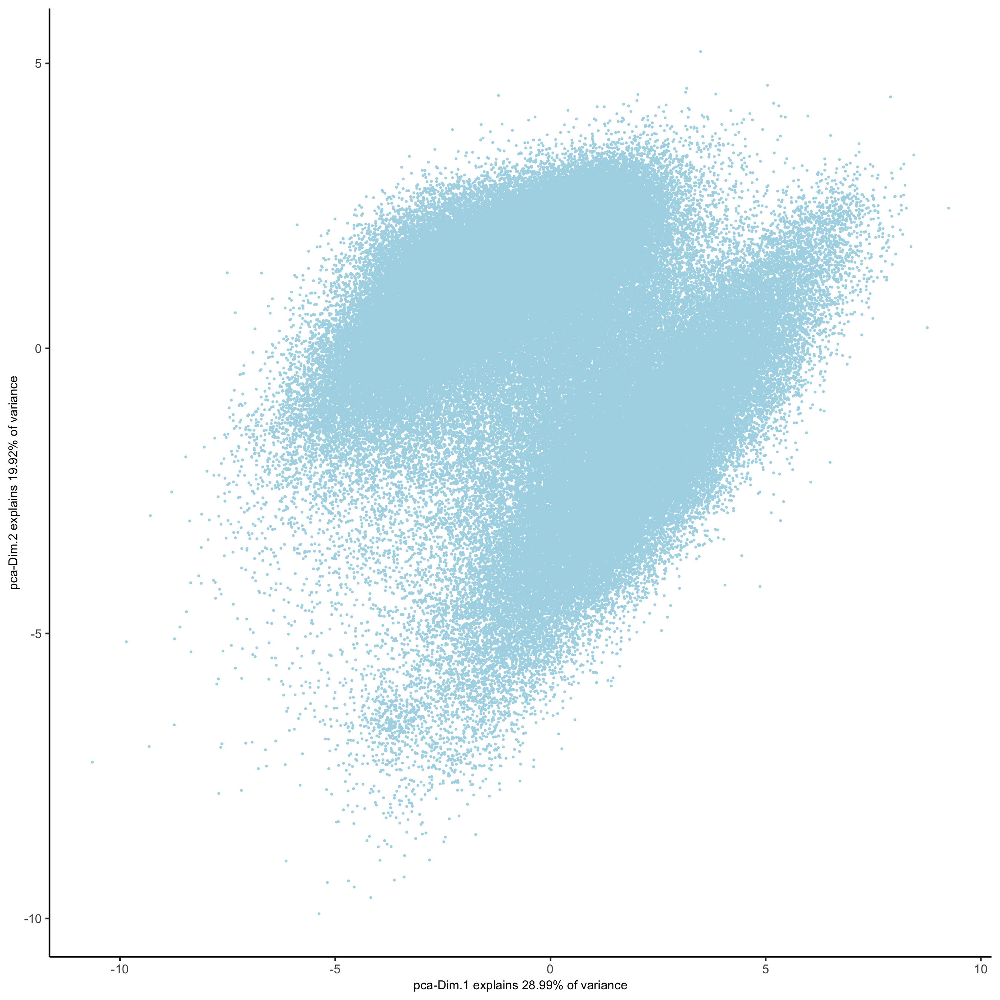
# UMAP pdac_test <- runUMAP(pdac_test, dimensions_to_use = 1:14, n_components = 2, n_threads = 12) plotUMAP(gobject = pdac_test, point_shape = 'no_border', point_size = 0.2, save_param = list(save_name = '3_c_UMAP'))
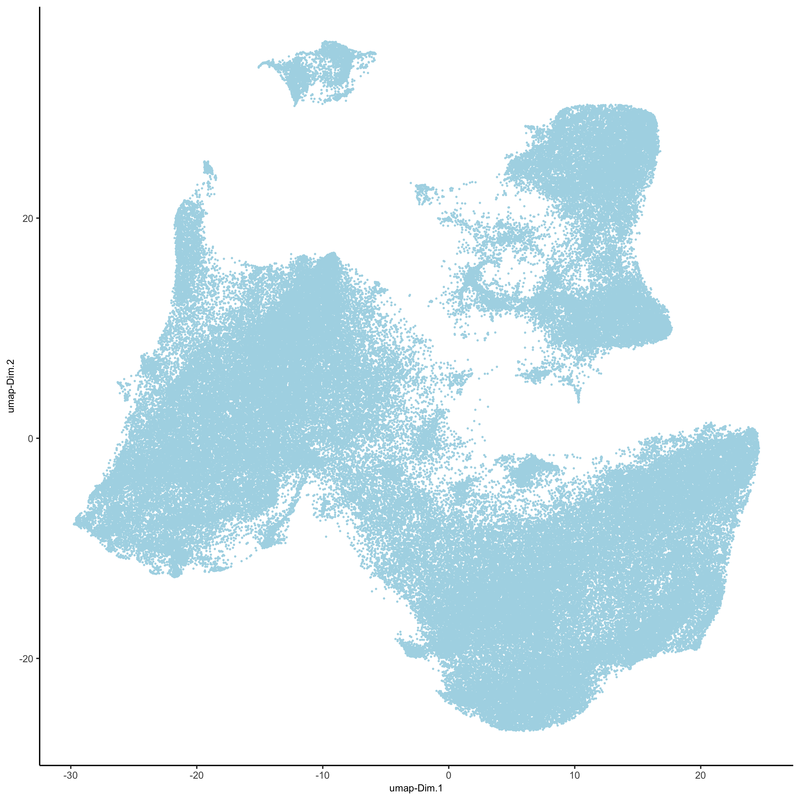
part 4: cluster
## sNN network (default) pdac_test <- createNearestNetwork(gobject = pdac_test, dimensions_to_use = 1:14, k = 20) ## 0.2 resolution pdac_test <- doLeidenCluster(gobject = pdac_test, resolution = 0.2, n_iterations = 100, name = 'leiden') # create customized color palette for leiden clustering results pdac_metadata = pDataDT(pdac_test) leiden_colors = Giotto:::getDistinctColors(length(unique(pdac_metadata$leiden))) names(leiden_colors) = unique(pdac_metadata$leiden) color_3 = leiden_colors['3'];color_10 = leiden_colors['10'] leiden_colors['3'] = color_10; leiden_colors['10'] = color_3 plotUMAP(gobject = pdac_test, cell_color = 'leiden', point_shape = 'no_border', point_size = 0.2, cell_color_code = leiden_colors, save_param = list(save_name = '4_a_UMAP'))
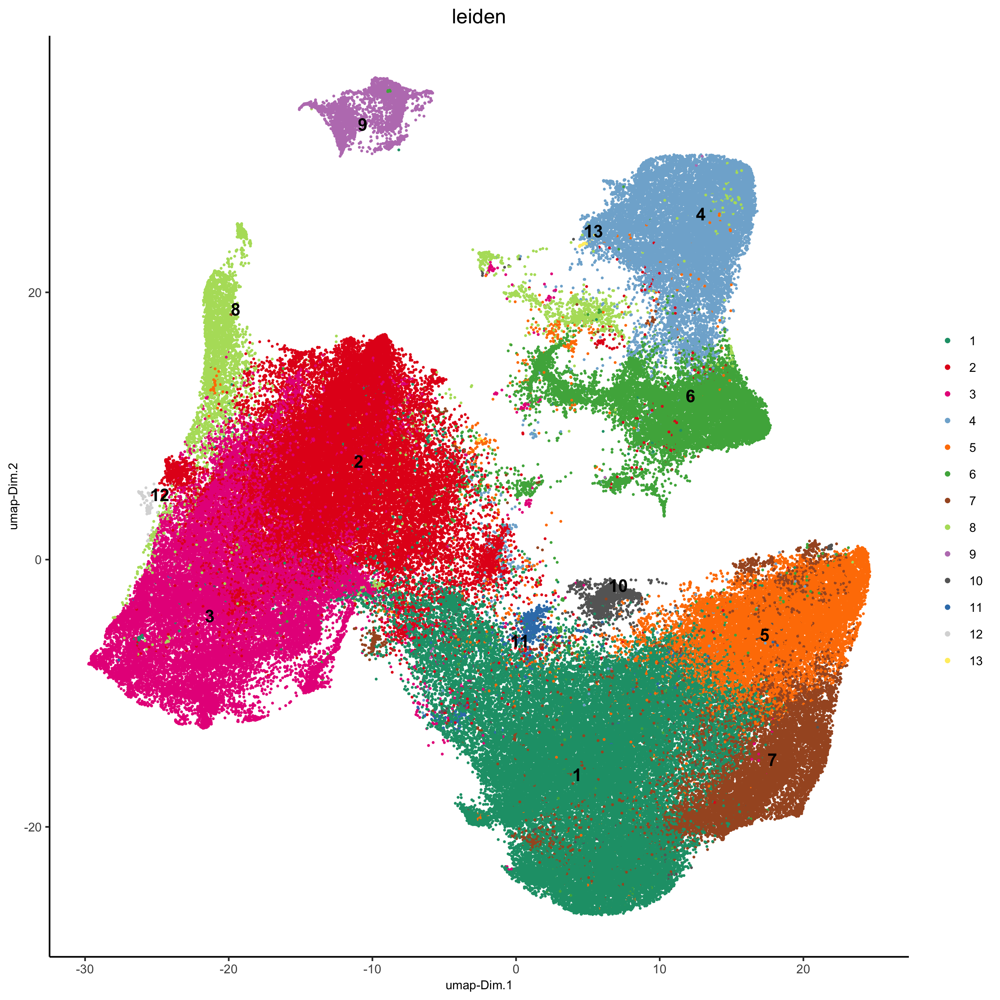
plotUMAP(gobject = pdac_test, cell_color = 'hist_info',point_shape = 'no_border', point_size = 0.2, save_param = list(save_name = '4_b_UMAP'))
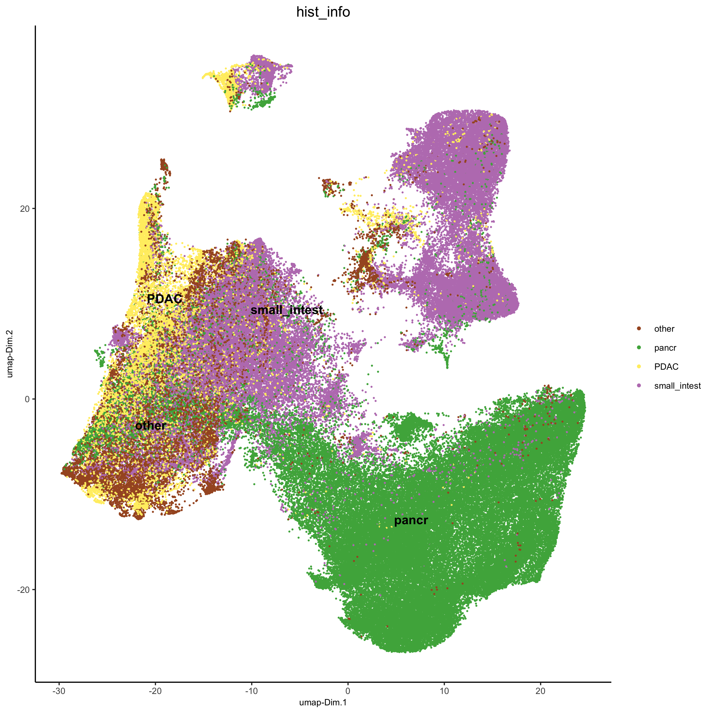
spatPlot(gobject = pdac_test, cell_color = 'leiden', point_shape = 'no_border', point_size = 0.2, cell_color_code = leiden_colors, coord_fix_ratio = 1, save_param = list(save_name = '4_c_spatplot'))
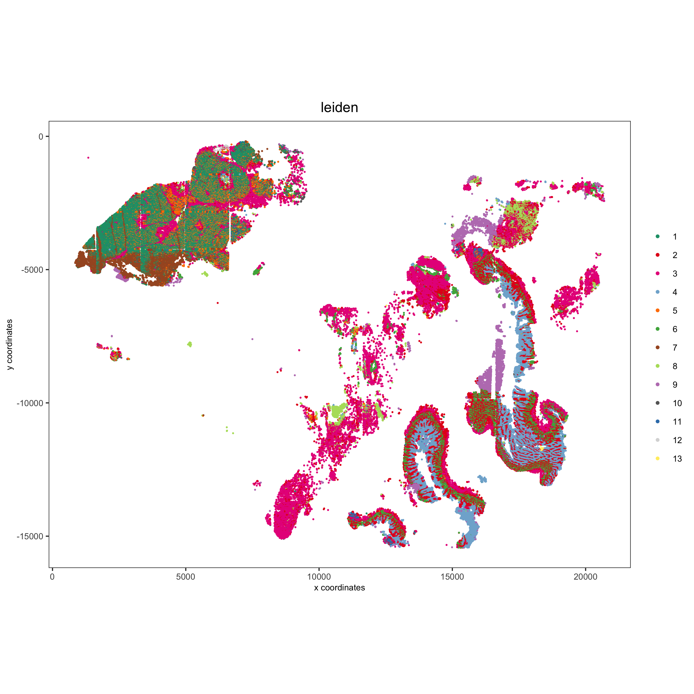
Add background image:
showGiottoImageNames(pdac_test) spatPlot(gobject = pdac_test, show_image = T, image_name = 'image_hist', cell_color = 'leiden', point_shape = 'no_border', point_size = 0.2, point_alpha = 0.7, cell_color_code = leiden_colors, coord_fix_ratio = 1, save_param = list(save_name = '4_d_spatPlot'))
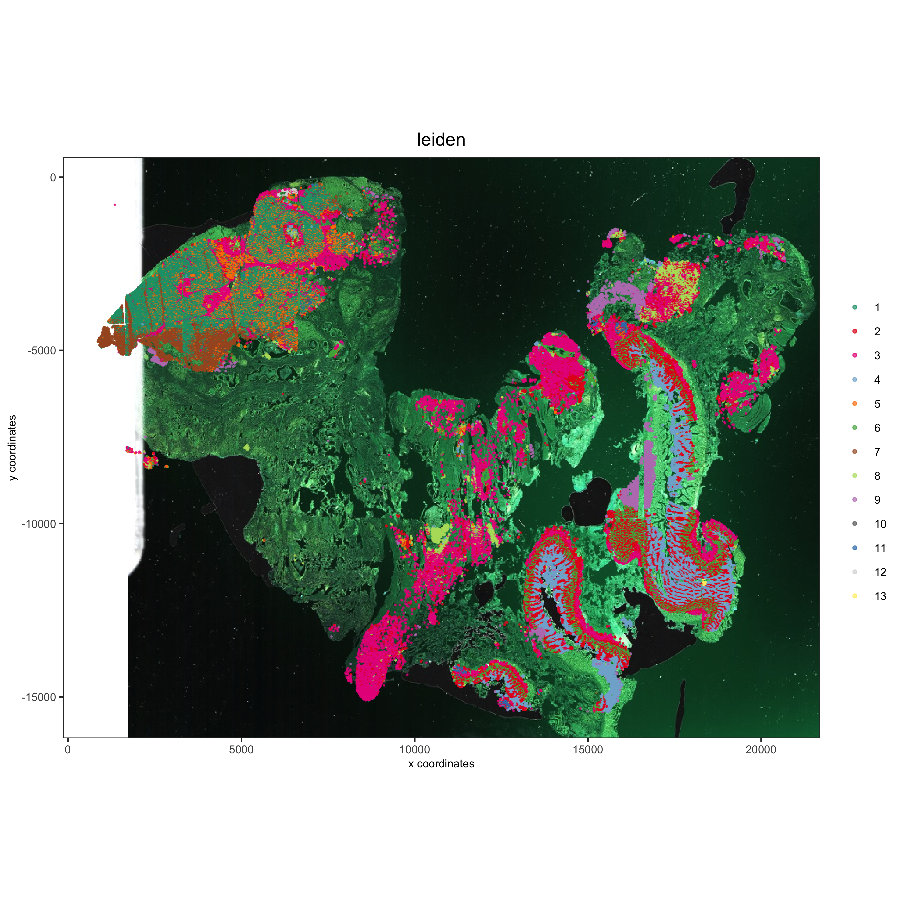
part 5: visualize spatial and expression space
spatDimPlot2D(gobject = pdac_test, cell_color = 'leiden', spat_point_shape = 'no_border', spat_point_size = 0.2, dim_point_shape = 'no_border', dim_point_size = 0.2, cell_color_code = leiden_colors, save_param = list(save_name = '5_a_spatdimplot'))
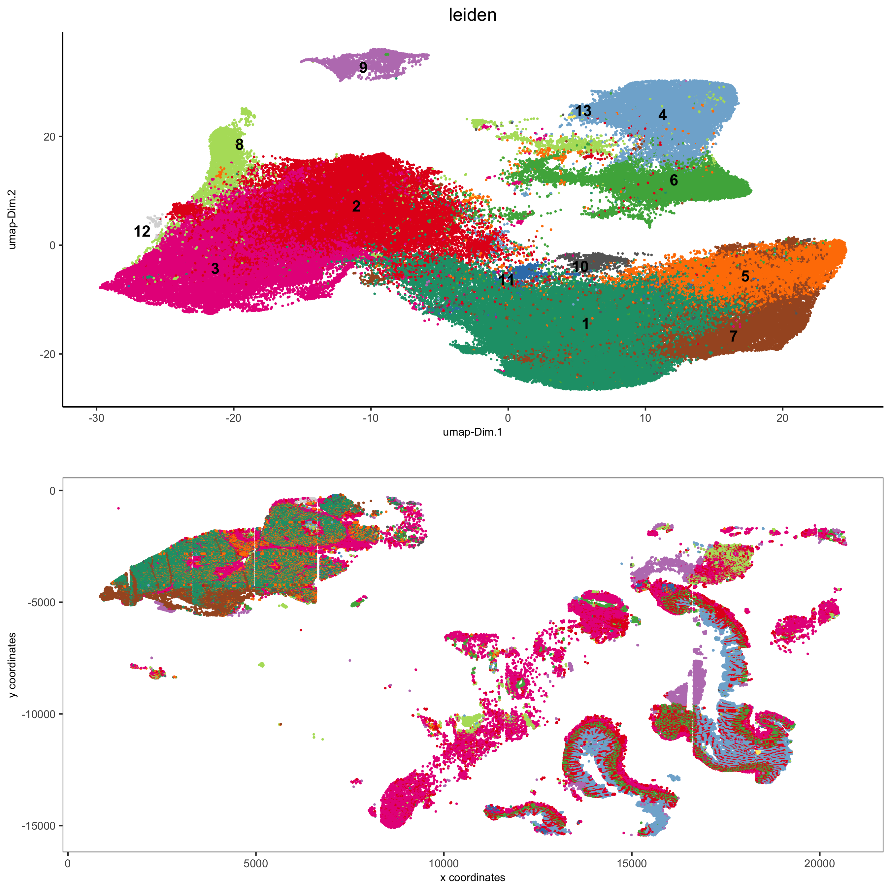
spatDimPlot2D(gobject = pdac_test, cell_color = 'leiden', spat_point_shape = 'border', spat_point_size = 0.2, spat_point_border_stroke = 0.01, dim_point_shape = 'border', dim_point_size = 0.2, dim_point_border_stroke = 0.01, cell_color_code = leiden_colors, save_param = list(save_name = '5_b_spatdimplot'))

spatDimPlot2D(gobject = pdac_test, cell_color = 'hist_info2', spat_point_shape = 'border', spat_point_size = 0.2, spat_point_border_stroke = 0.01, dim_point_shape = 'border', dim_point_size = 0.2, dim_point_border_stroke = 0.01, save_param = list(save_name = '5_c_spatdimplot'))
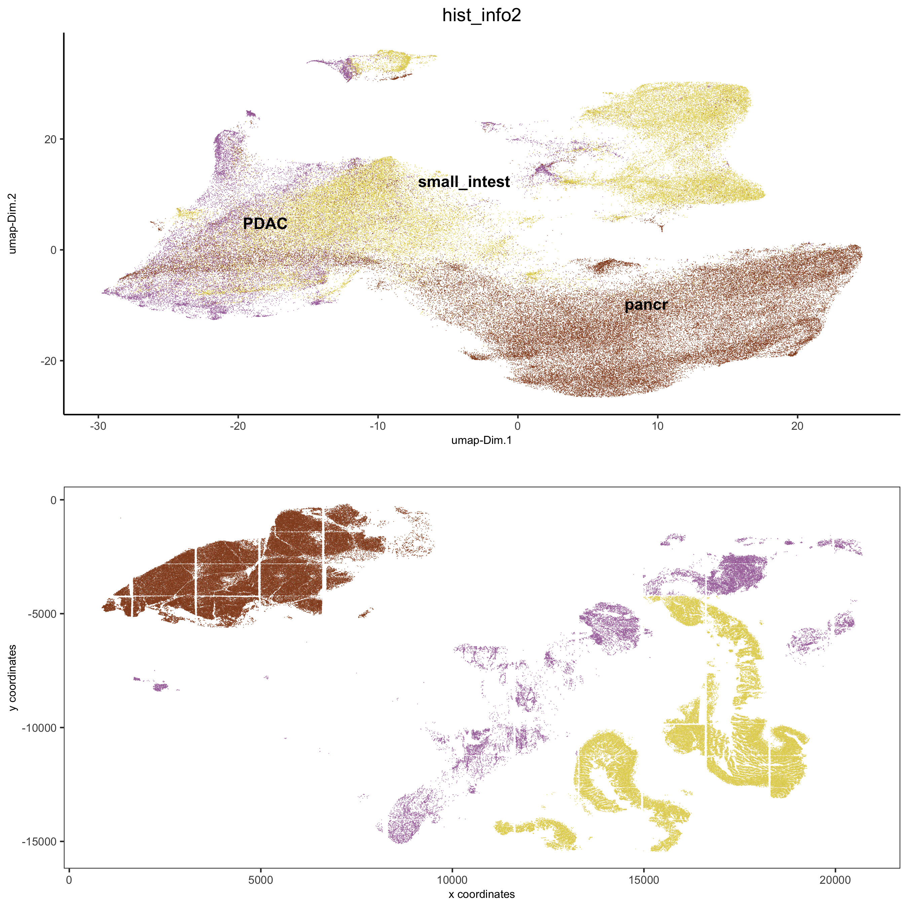
part 6: cell type marker gene detection
# resolution 0.2 cluster_column = 'leiden' # gini markers_gini = findMarkers_one_vs_all(gobject = pdac_test, method = "gini", expression_values = "scaled", cluster_column = cluster_column, min_genes = 5) markergenes_gini = unique(markers_gini[, head(.SD, 5), by = "cluster"][["genes"]]) plotMetaDataHeatmap(pdac_test, expression_values = "norm", metadata_cols = c(cluster_column), selected_genes = markergenes_gini, custom_cluster_order = c(1, 10, 3, 12, 8, 2, 9, 6, 11, 13, 4, 5, 7), y_text_size = 8, show_values = 'zscores_rescaled', save_param = list(save_name = '6_a_metaheatmap'))
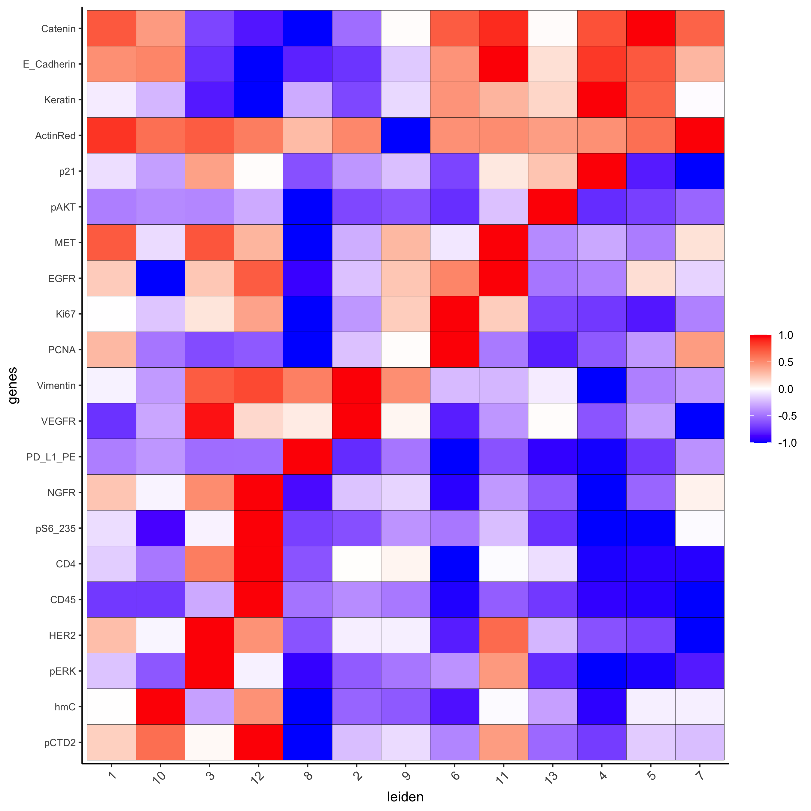
topgenes_gini = markers_gini[, head(.SD, 1), by = 'cluster']$genes violinPlot(pdac_test, genes = unique(topgenes_gini), cluster_column = cluster_column, strip_text = 8, strip_position = 'right', save_param = c(save_name = '6_b_violinplot_gini', base_width = 5, base_height = 10))
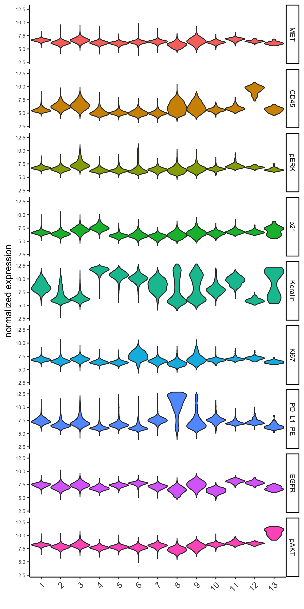
part 7: cell type annotation
Metadata heatmap
Inspect the potential cell type markers
## all genes heatmap plotMetaDataHeatmap(pdac_test, expression_values = "norm", metadata_cols = 'leiden', custom_cluster_order = c(1, 10, 3, 12, 8, 2, 9, 6, 11, 13, 4, 5, 7), y_text_size = 8, show_values = 'zscores_rescaled', save_param = list(save_name = '7_a_metaheatmap'))

Inspect the potential cell type markers stratified by tissue location
plotMetaDataHeatmap(pdac_test, expression_values = "norm", metadata_cols = c('leiden','hist_info2'), first_meta_col = 'leiden', second_meta_col = 'hist_info2', y_text_size = 8, show_values = 'zscores_rescaled', save_param = list(save_name = '7_b_metaheatmap'))
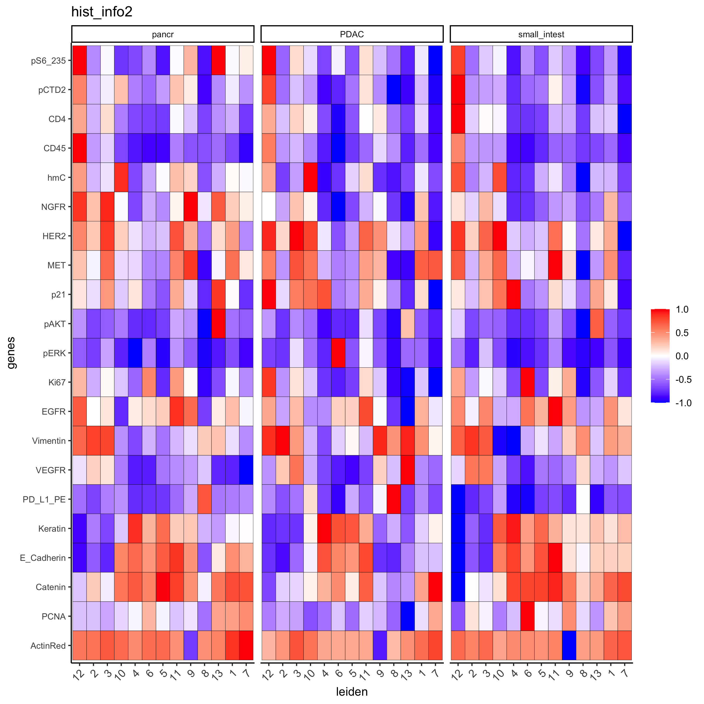
Spatial subsets
Inspect subsets of the data based on tissue location
spatPlot(pdac_test, cell_color = 'leiden', cell_color_code = leiden_colors, point_shape = 'no_border', point_size = 0.75, group_by = 'hist_info2', save_param = list(save_name = '7_c_spatplot'))
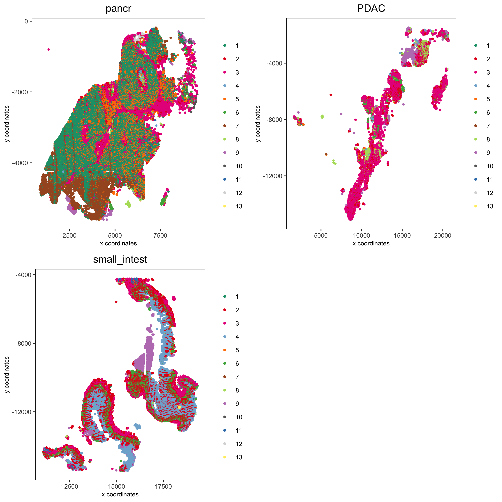
spatPlot(pdac_test, cell_color = 'leiden', cell_color_code = leiden_colors, point_shape = 'no_border', point_size = 0.3, group_by = 'hist_info2', group_by_subset = c('pancr'), cow_n_col = 1, save_param = list(save_name = '7_d_spatplot'))
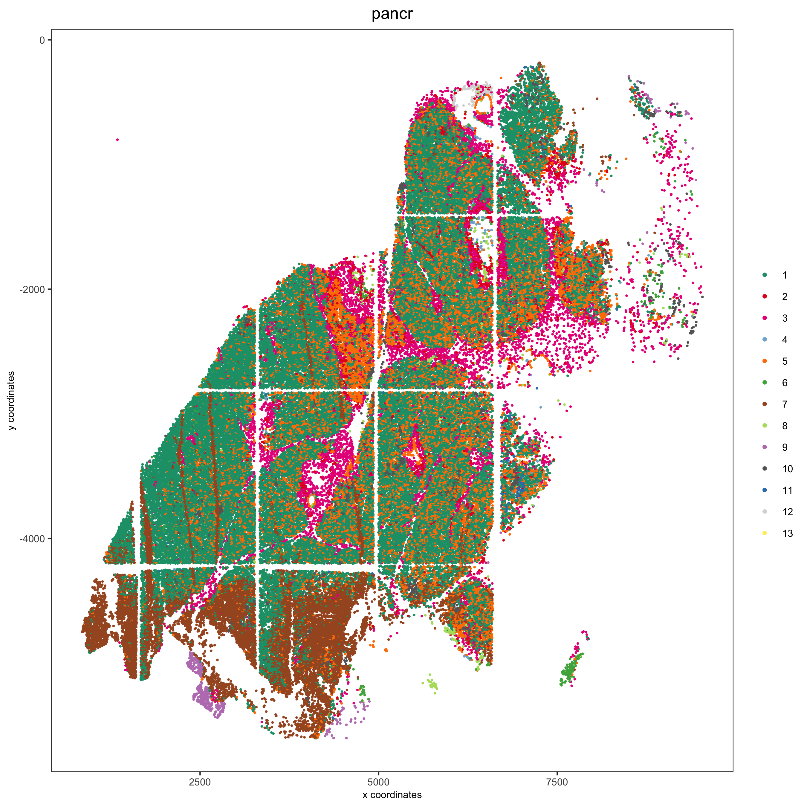
spatPlot(pdac_test, cell_color = 'leiden', cell_color_code = leiden_colors, point_shape = 'no_border', point_size = 0.3, group_by = 'hist_info2', group_by_subset = c('PDAC'), cow_n_col = 1, save_param = list(save_name = '7_e_spatplot'))
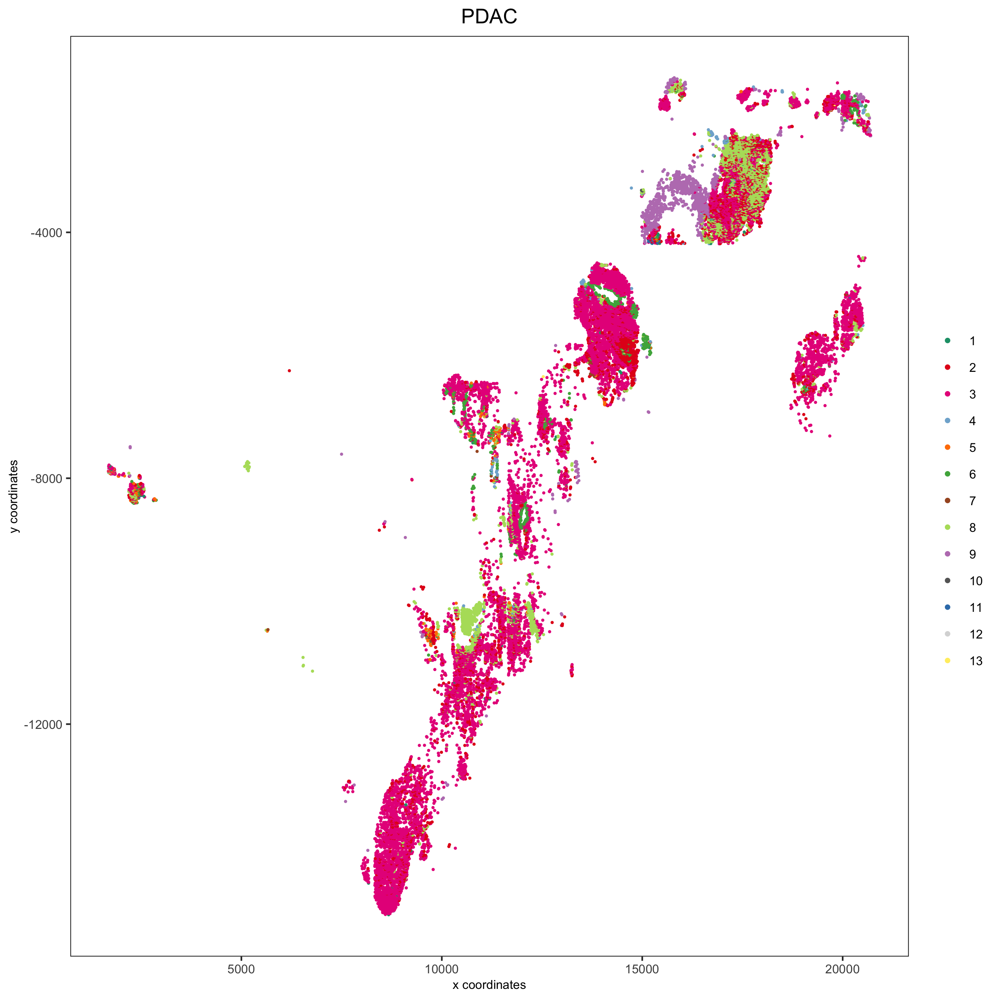
spatPlot(pdac_test, cell_color = 'leiden', cell_color_code = leiden_colors, point_shape = 'no_border', point_size = 0.3, group_by = 'hist_info2', group_by_subset = c('small_intest'), cow_n_col = 1, save_param = list(save_name = '7_f_spatplot'))
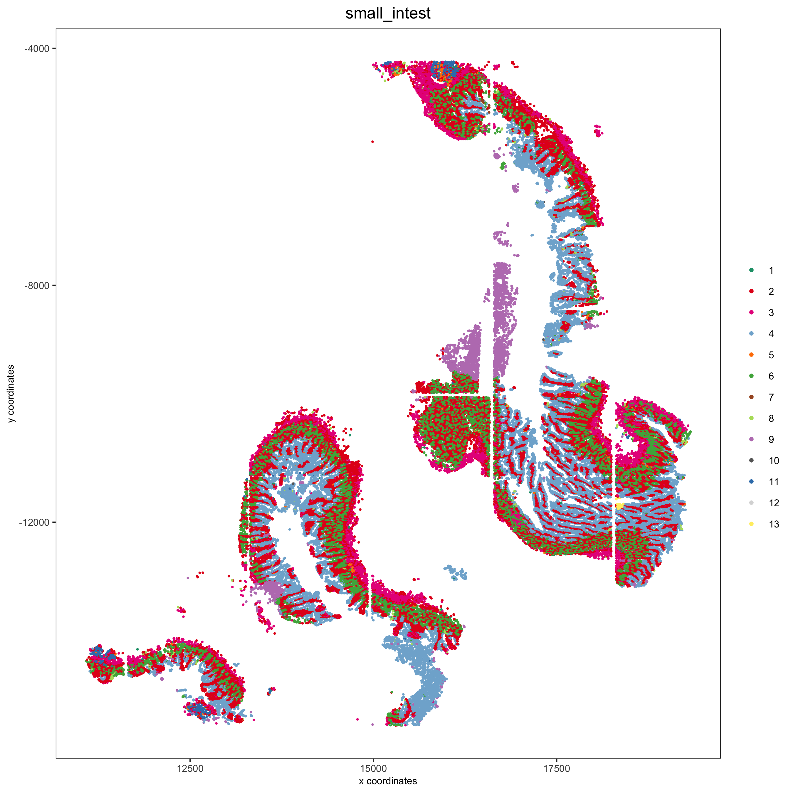
Spatial distribution of clusters
Visually inspect the spatial distribution of different clusters
# spatial enrichment of groups for(group in unique(pDataDT(pdac_test)$leiden)) { spatPlot(pdac_test, cell_color = 'leiden', point_shape = 'no_border', point_size = 0.3, other_point_size = 0.1, select_cell_groups = group, cell_color_code = 'red', save_param = list(save_name = paste0('7_g_spatplot_', group))) }
Here we show a subset of the resulting plots:
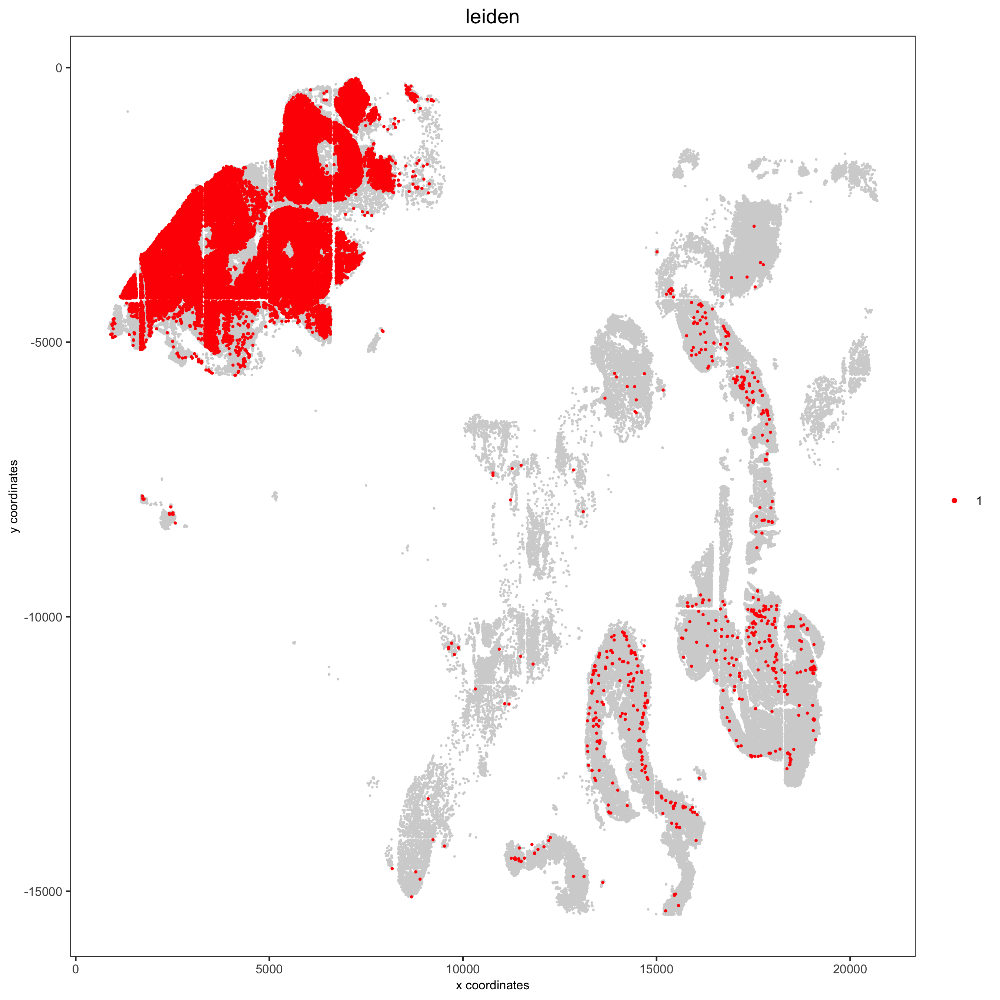
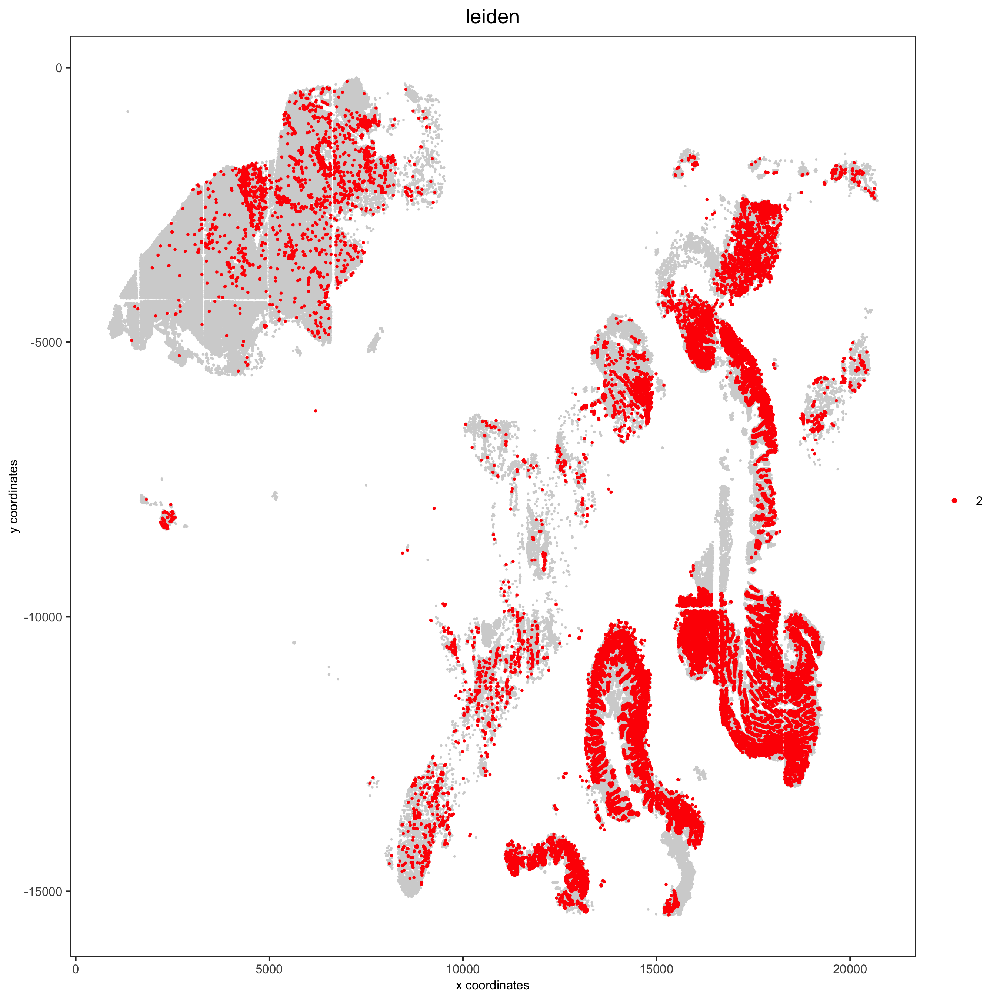
Annotate clusters based on spatial position and dominant expression patterns
cell_metadata = pDataDT(pdac_test) cluster_data = cell_metadata[, .N, by = c('leiden', 'hist_info2')] cluster_data[, fraction:= round(N/sum(N), 2), by = c('leiden')] data.table::setorder(cluster_data, leiden, hist_info2, fraction) # final annotation names = 1:13 location = c('pancr', 'intest', 'general', 'intest', 'pancr', 'intest', 'pancr', 'canc', 'general', 'pancr', 'general', 'pancr', 'intest') feats = c('epithelial_I', 'fibroblast_VEGFR+', 'stroma_HER2+_pERK+', 'epithelial_lining_p21+', 'epithelial_keratin', 'epithelial_prolif', 'epithelial_actin++', 'immune_PD-L1+', 'stromal_actin-', 'epithelial_tx_active', 'epithelial_MET+_EGFR+', 'immune_CD45+', 'epithelial_pAKT') annot_dt = data.table::data.table('names' = names, 'location' = location, 'feats' = feats) annot_dt[, annotname := paste0(location,'_',feats)] cell_annot = annot_dt$annotname;names(cell_annot) = annot_dt$names pdac_test = annotateGiotto(pdac_test, annotation_vector = cell_annot, cluster_column = 'leiden') # specify colors leiden_colors leiden_names = annot_dt$annotname; names(leiden_names) = annot_dt$names cell_annot_colors = leiden_colors names(cell_annot_colors) = leiden_names[names(leiden_colors)] # covisual spatDimPlot(gobject = pdac_test, cell_color = 'cell_types', cell_color_code = cell_annot_colors, spat_point_shape = 'border', spat_point_size = 0.2, spat_point_border_stroke = 0.01, dim_point_shape = 'border', dim_point_size = 0.2, dim_point_border_stroke = 0.01, dim_show_center_label = F, spat_show_legend = T, dim_show_legend = T, legend_symbol_size = 3, save_param = list(save_name = '7_h_spatdimplot'))
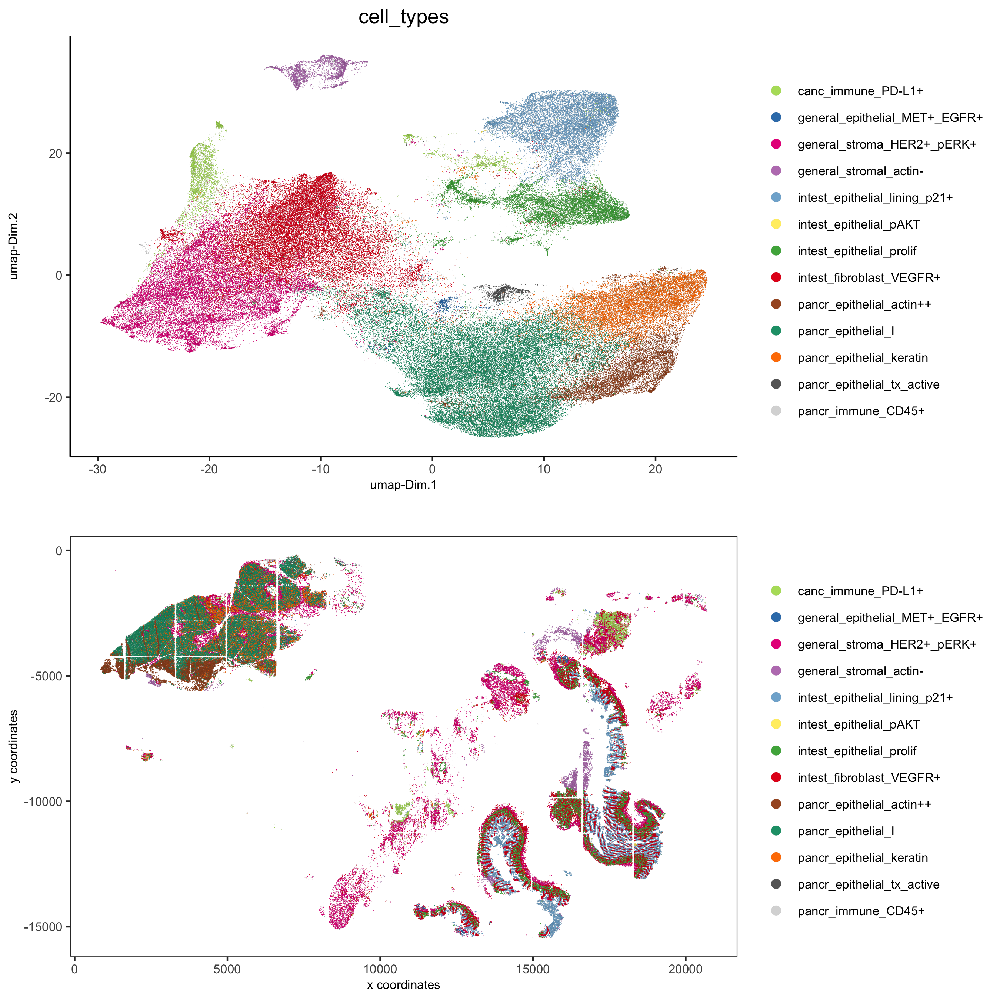
# spatial only spatPlot(gobject = pdac_test, cell_color = 'cell_types', point_shape = 'no_border', point_size = 0.2, coord_fix_ratio = 1, show_legend = T, cell_color_code = cell_annot_colors, background_color = 'black', save_param = list(save_name = '7_i_spatplot'))
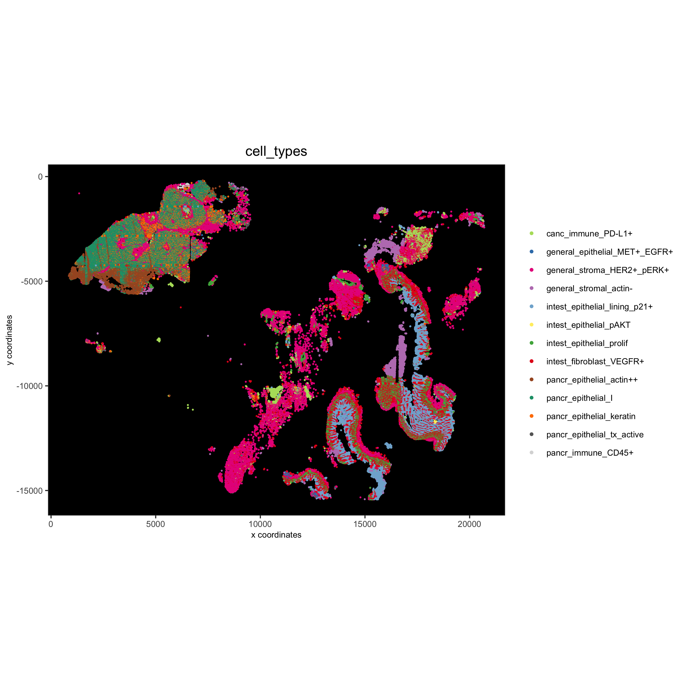
# dimension only plotUMAP(gobject = pdac_test, cell_color = 'cell_types', point_shape = 'no_border', point_size = 0.2, show_legend = T, cell_color_code = cell_annot_colors, show_center_label = F, background_color = 'black', save_param = list(save_name = '7_j_umap'))
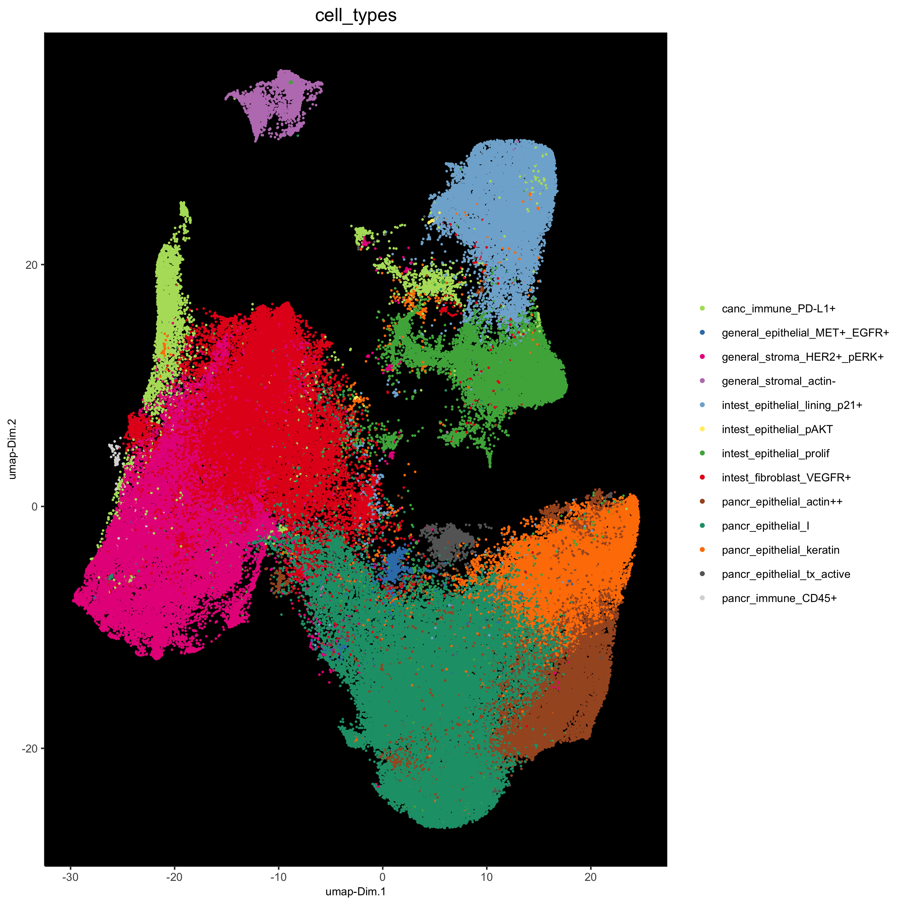
8. spatial grid
pdac_test <- createSpatialGrid(gobject = pdac_test, sdimx_stepsize = 150, sdimy_stepsize = 150, minimum_padding = 0) spatPlot(pdac_test, cell_color = 'leiden', show_grid = T, point_size = 0.75, point_shape = 'no_border', grid_color = 'red', spatial_grid_name = 'spatial_grid', save_param = list(save_name = '8_a_spatplot'))
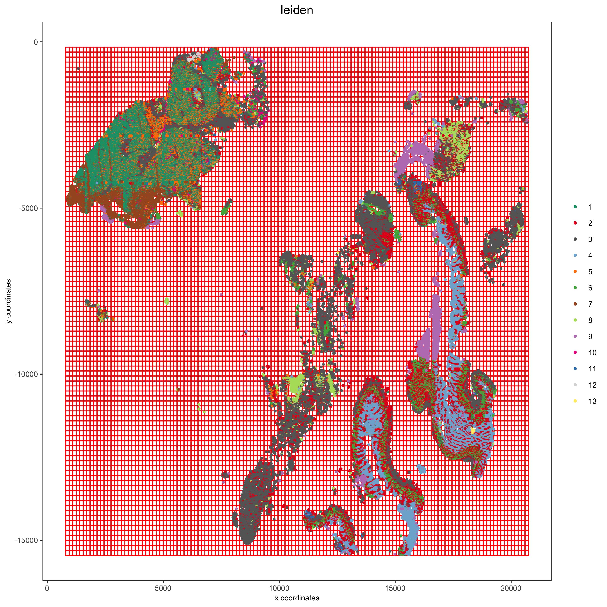
9. spatial network
pdac_test <- createSpatialNetwork(gobject = pdac_test, minimum_k = 2)
12. cell-cell preferential proximity
## calculate frequently seen proximities cell_proximities = cellProximityEnrichment(gobject = pdac_test, cluster_column = 'cell_types', spatial_network_name = 'Delaunay_network', number_of_simulations = 200) ## barplot cellProximityBarplot(gobject = pdac_test, CPscore = cell_proximities, min_orig_ints = 5, min_sim_ints = 5, save_param = list(save_name = '12_a_barplot'))
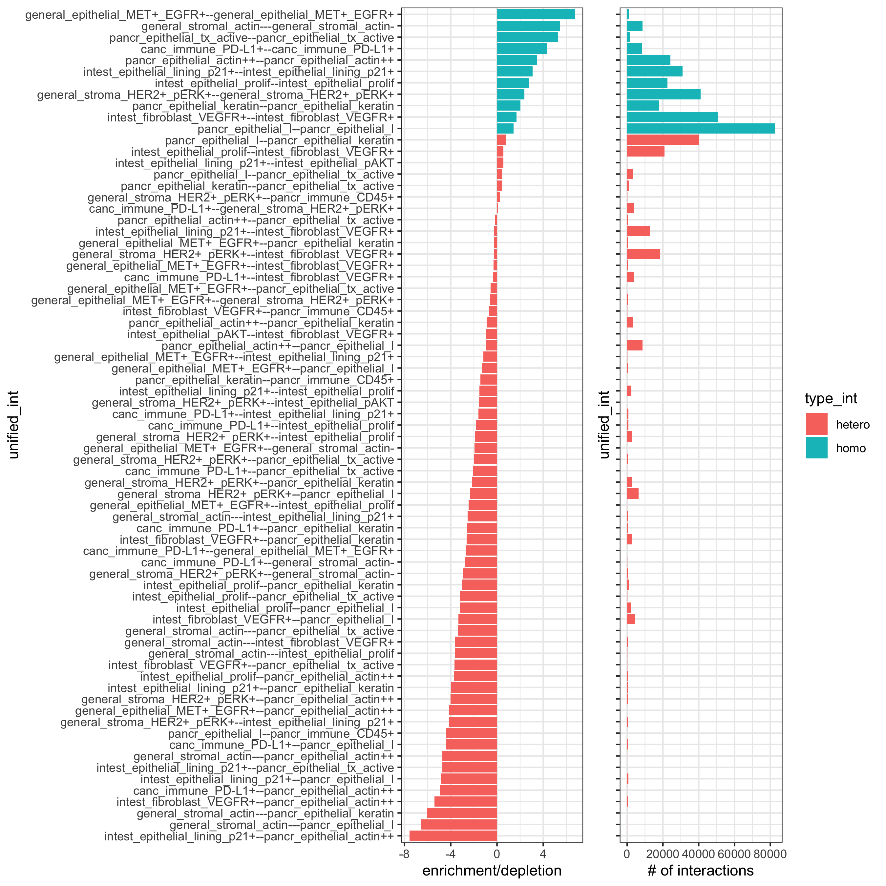
## network cellProximityNetwork(gobject = pdac_test, CPscore = cell_proximities, remove_self_edges = T, only_show_enrichment_edges = F, save_param = list(save_name = '12_b_network'))
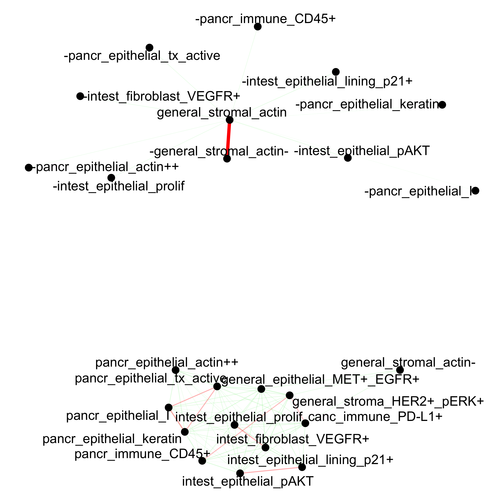
## visualization spec_interaction = "1--5" cellProximitySpatPlot2D(gobject = pdac_test, point_select_border_stroke = 0, interaction_name = spec_interaction, cluster_column = 'leiden', show_network = T, cell_color = 'leiden', coord_fix_ratio = NULL, point_size_select = 0.3, point_size_other = 0.1, save_param = list(save_name = '12_c_proxspatplot'))
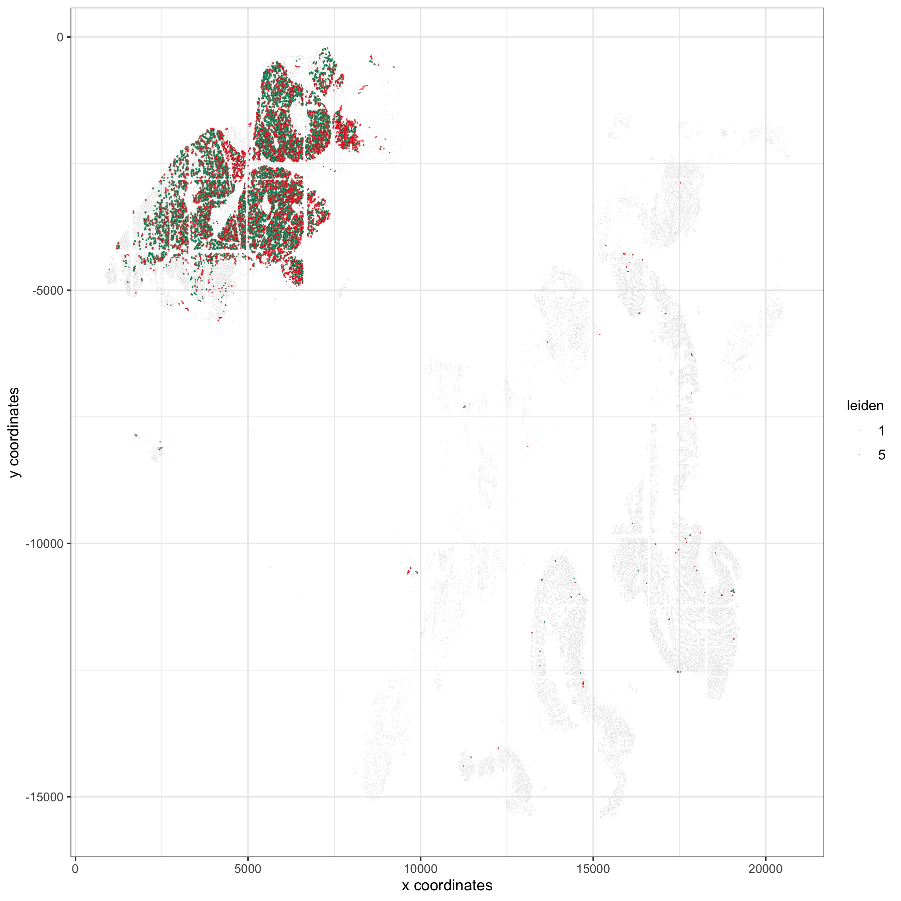
part X: analyses for paper
Heatmap for cell type annotation:
cell_type_order_pdac = c("pancr_epithelial_actin++", "pancr_epithelial_I", "intest_epithelial_lining_p21+", "pancr_epithelial_keratin", "intest_epithelial_prolif" ,"general_epithelial_MET+_EGFR+", "intest_epithelial_pAKT", "pancr_epithelial_tx_active", "canc_immune_PD-L1+","general_stromal_actin-", "pancr_immune_CD45+", "intest_fibroblast_VEGFR+", "general_stroma_HER2+_pERK+") plotMetaDataHeatmap(pdac_test, expression_values = "scaled", metadata_cols = c('cell_types'), custom_cluster_order = cell_type_order_pdac, y_text_size = 8, show_values = 'zscores_rescaled', save_param = list(save_name = 'xx_a_metaheatmap'))

Pancreas
Highlight region in pancreas:
## pancreas region ## my_pancreas_Ids = pdac_metadata[frame == 17][['cell_ID']] my_pancreas_giotto = subsetGiotto(pdac_test, cell_ids = my_pancreas_Ids) spatPlot(my_pancreas_giotto, cell_color = 'leiden', point_shape = 'no_border', point_size = 1, cell_color_code = leiden_colors, save_param = list(save_name = 'xx_b_spatplot'))
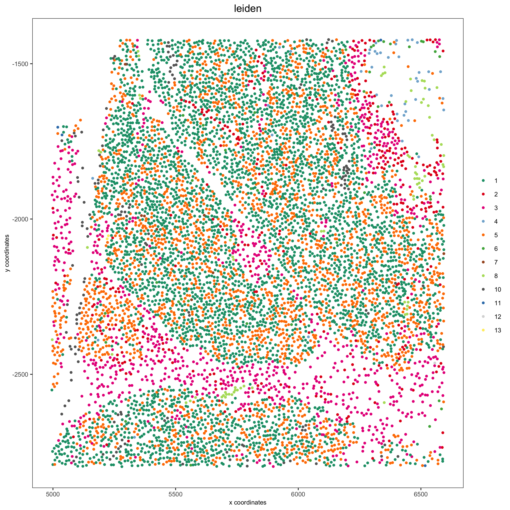
spatGenePlot(my_pancreas_giotto, expression_values = 'scaled', point_border_stroke = 0.01, genes = c('E_Cadherin','Catenin', 'Vimentin', 'VEGFR'), point_size = 1, save_param = list(save_name = 'xx_c_spatgeneplot'))

plotUMAP(my_pancreas_giotto, cell_color = 'leiden', point_shape = 'no_border', point_size = 0.5, cell_color_code = leiden_colors, show_center_label = F, save_param = list(save_name = 'xx_d_umap'))
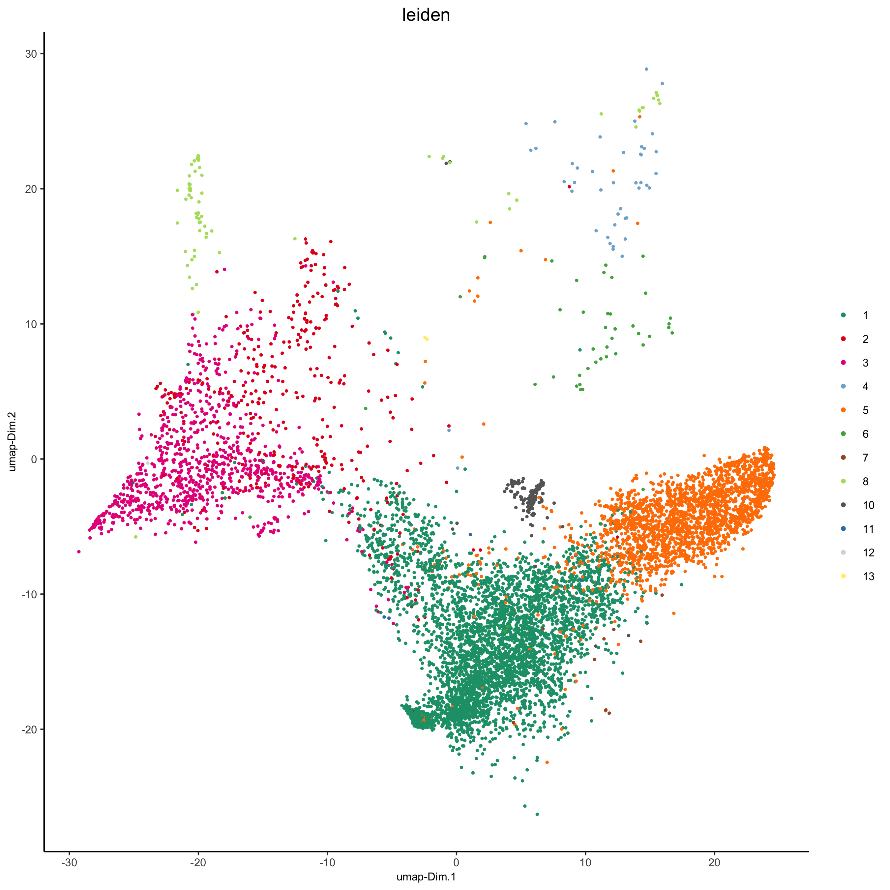
dimGenePlot(my_pancreas_giotto, expression_values = 'scaled', point_border_stroke = 0.01, genes = c('E_Cadherin','Catenin', 'Vimentin', 'VEGFR'), point_size = 1, save_param = list(save_name = 'xx_e_dimGeneplot'))
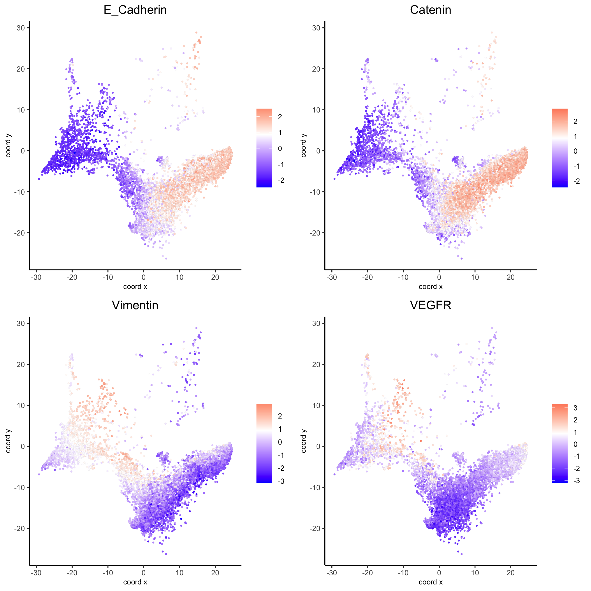
Small intestines
Highlight region in small intestines (same as in original paper):
## intestine region ## my_intest_Ids = pdac_metadata[frame == 115][['cell_ID']] my_intest_giotto = subsetGiotto(pdac_test, cell_ids = my_intest_Ids) spatPlot(my_intest_giotto, cell_color = 'leiden', point_shape = 'no_border', point_size = 1, cell_color_code = leiden_colors, save_param = list(save_name = 'xx_f_spatplot'))
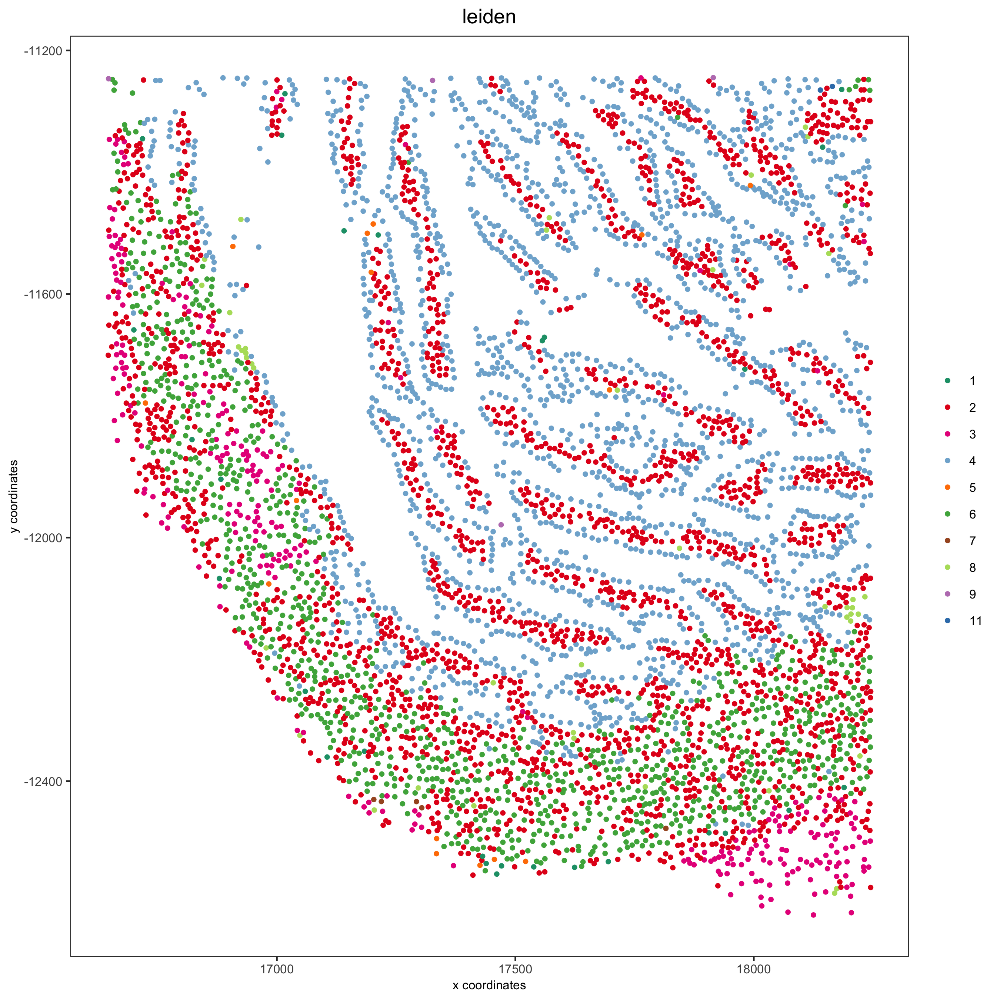
spatGenePlot(my_intest_giotto, expression_values = 'scaled', point_border_stroke = 0.01, genes = c('PCNA','Catenin', 'Ki67', 'pERK'), point_size = 1, save_param = list(save_name = 'xx_g_spatGeneplot'))
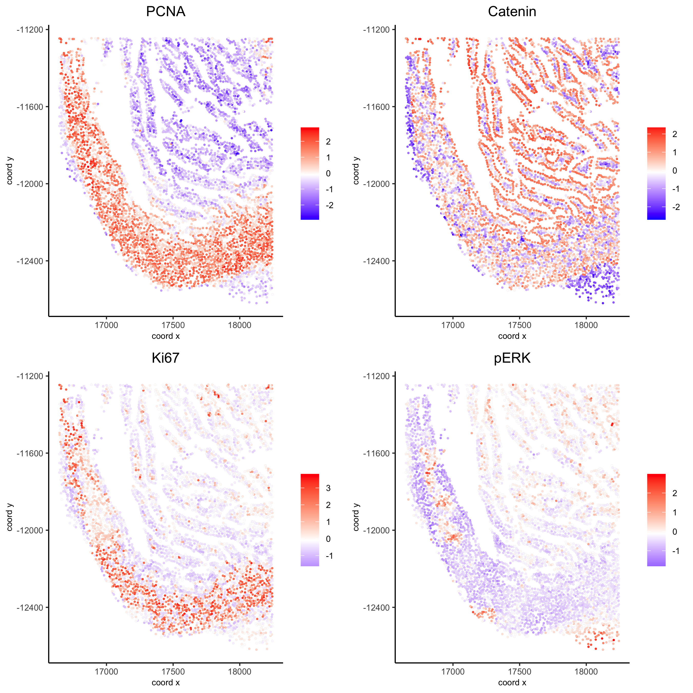
plotUMAP(my_intest_giotto, cell_color = 'leiden', point_shape = 'no_border', point_size = 0.5, cell_color_code = leiden_colors, show_center_label = F, save_param = list(save_name = 'xx_h_umap'))
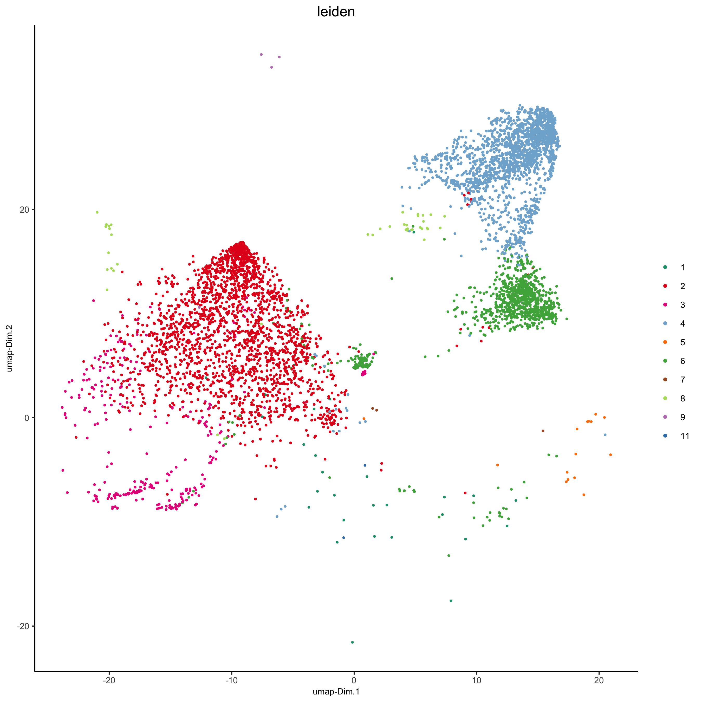
dimGenePlot(my_intest_giotto, expression_values = 'scaled', point_border_stroke = 0.01, genes = c('PCNA','Catenin', 'Ki67', 'pERK'), point_size = 1, save_param = list(save_name = 'xx_i_dimGeneplot'))
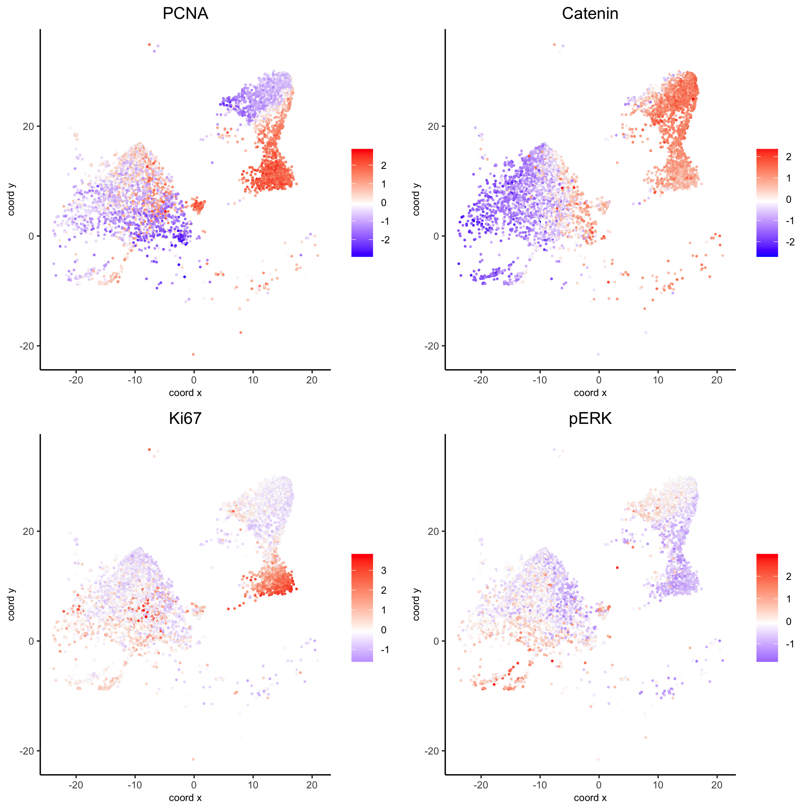